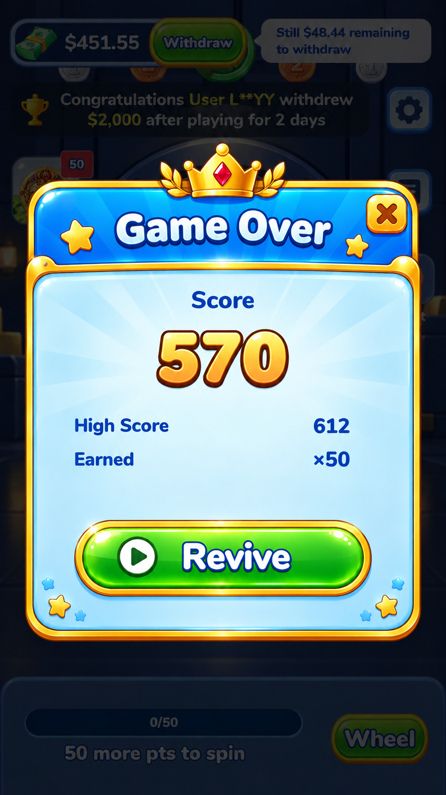
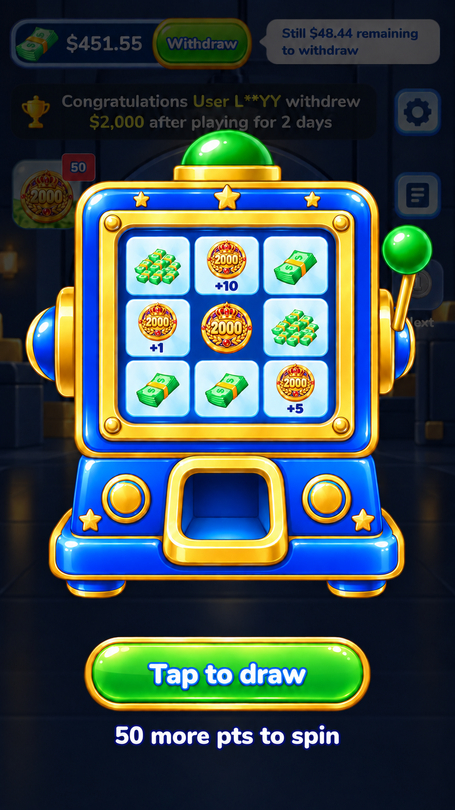
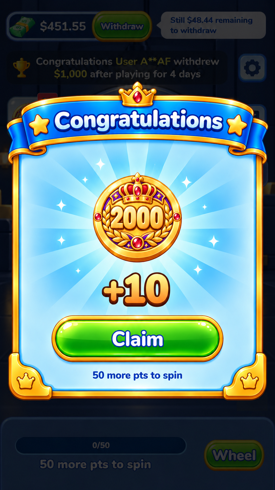
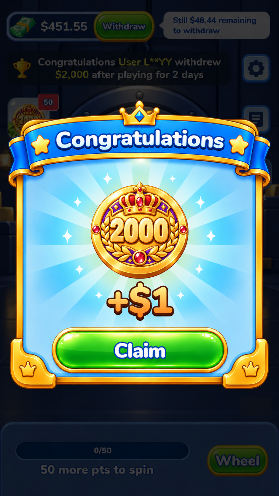
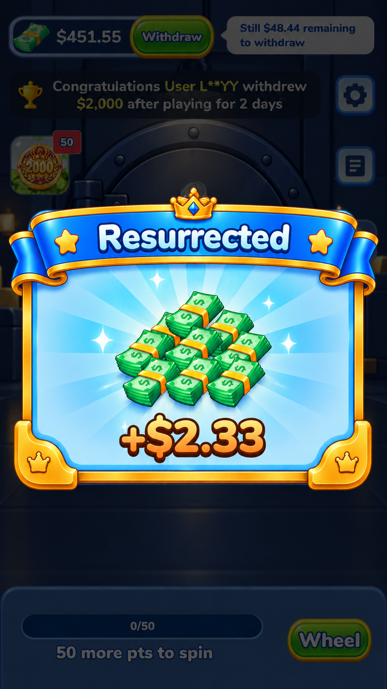
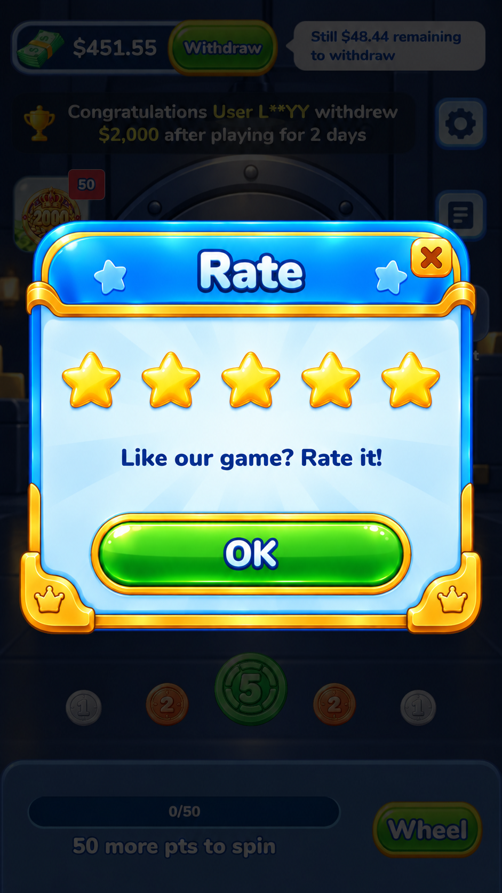

延续现有蓝金配色、浅蓝面板、绿色按钮和高清硬币风格。
点击任意图片放大查看；可按编号提出修改或确认通过。图中金额和分数为展示示例。

保留分数、最高分、获得数量及视频复活按钮。

保留八格奖品＋中心硬币布局，采用蓝金抽奖机。

2000 硬币、奖励数量与领取按钮。

2000 合成后的金币展示与奖励领取。

沿用奖励系列的蓝金卷轴、现金和放射光。

五颗星、关闭与确认按钮，匹配设置弹窗系列。